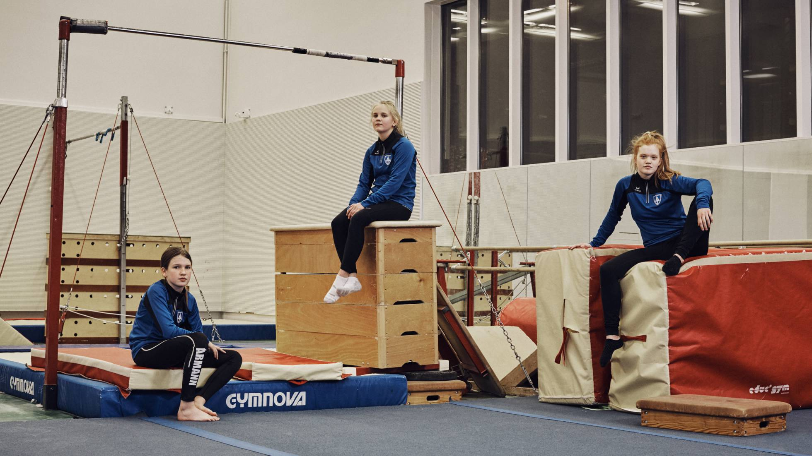

Legendas nanicas em risco de extinção apostam em figuras como Jair Bolsonaro e em fortalecimento regional para não desaparecerem
Nos últimos anos, o país reduziu drasticamente o consumo de tabaco, drogas e álcool entre os jovens
A punição chega um dia depois da detenção do dirigente, suspeito de comprar votos para trazer a Olimpíada ao Rio de Janeiro. Decisão não afetará atletas brasileiros